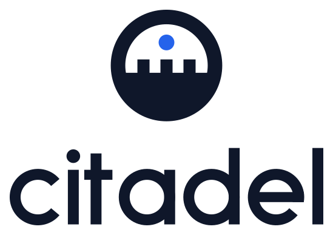
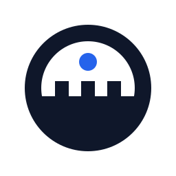
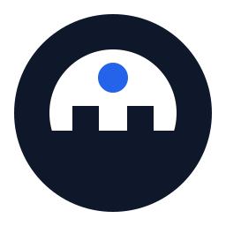

A lens frames a walled skyline under a rising beacon. Usage rules in GUIDELINES.md.
citadel-horizontal.svgcitadel-horizontal-reversed.svg
citadel-stacked.svg
citadel-stacked-reversed.svgcitadel-wordmark.svg
citadel-symbol.svg
citadel-symbol-small.svg
citadel-symbol-reversed.svg
citadel-symbol-small-reversed.svgvariants/*-black.svgvariants/*-white.svgvariants/*-mono-2563eb.svgvariants/*-white.svg